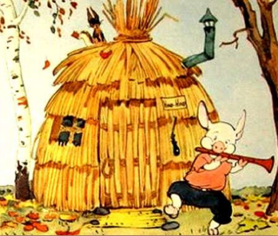

Лабораторная работа №20. Форматирование
текста в CSS_трансформирование текста
Трансформирование текста
text-transform
Преобразование текста в
верхний и регистр
Преобразование текста в
нижний регистр
Преобразование первых
букв каждого слова из строчных в заглавные
Наследуется
| Значения: |
|
none |
Значение по умолчанию, означает
отсутствие трансформации. Также отменяет
трансформацию текста для элемента в
группе элементов с установленным свойством. |
capitalize |
Изменяет написание первой буквы каждого
слова в элементе, делая её прописной. |
uppercase |
Выводит все слова в элементе прописными буквами. |
lowercase |
Выводит все слова в элементе строчными буквами. |
initial |
Устанавливает значение свойства в значение
по умолчанию. |
inherit |
Наследует значение свойства от родительского элемента. |
Синтаксис
h2 {text-transform: none;}
h2 {text-transform: capitalize;}
h2 {text-transform: uppercase;}
h2 {text-transform: lowercase;}
Ниф-Ниф решил, что проще и скорее
всего сматерить дом из соломы.
Ни с кем не посоветовавшись, он так и сделал. Уже
к вечеру его хижина была готова.
text-transform: none;
Ниф-Ниф положил на крышу последнюю соломинку и,
очень довольный своим домиком, весело запел:
text-transform: capitalize;
Хоть полсвета обойдёшь,
Обойдёшь, обойдёшь,
Лучше дома не найдёшь,
Не найдёшь, не найдёшь!
text-transform: uppercase;
Напевая эту песенку, он направился к Нуф-Нуфу.
text-transform: lowercase;
Нуф-Нуф невдалеке тоже строил себе домик. Он старался скорее покончить с этим скучным и неинтересным делом.
Сначала, так же как и брат, он хотел построить дом из соломы.
Но потом решил, что в таком доме зимой будет очень холодно. Дом
будет прочнее и теплее, если его построить из веток и тонких
прутьев. Так он и сделал.
text-transform: initial;
Он вбил в землю колья, переплёл их прутьями, на крышу навалил сухих листьев, и к вечеру дом был готов.
Нуф-Нуф с гордостью обошёл его несколько раз кругом и запел:
У меня хороший дом,
Новый дом, прочный дом.
Мне не страшен дождь и гром,
Дождь и гром, дождь и гром!
Сергей Владимирович Михалков. Три поросенка
